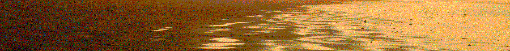
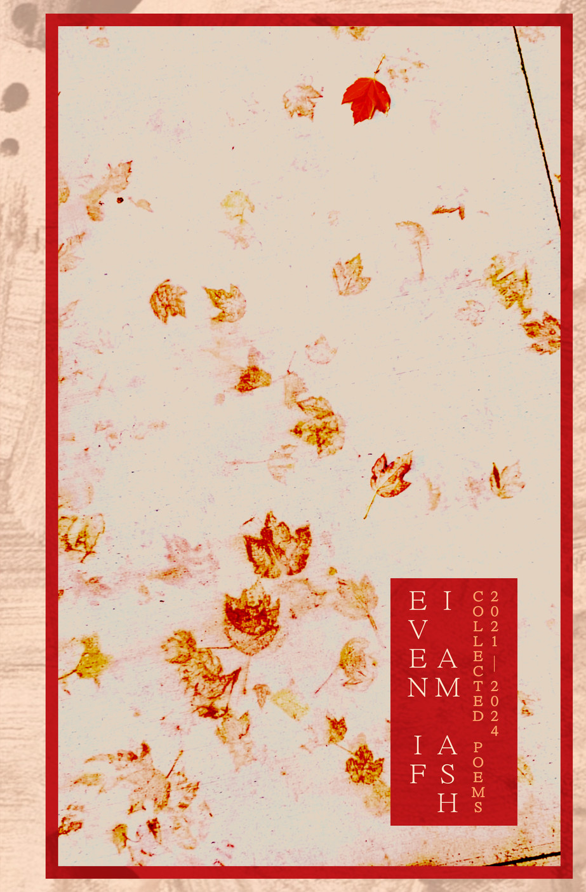
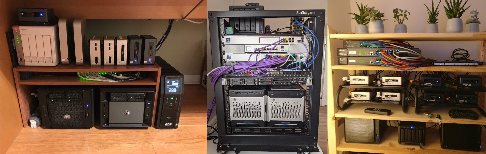
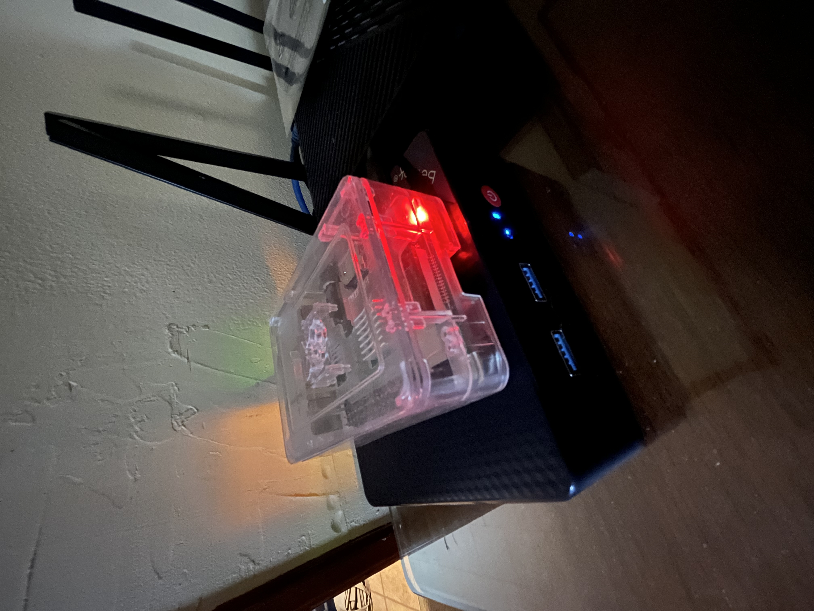
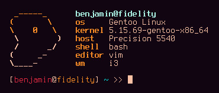
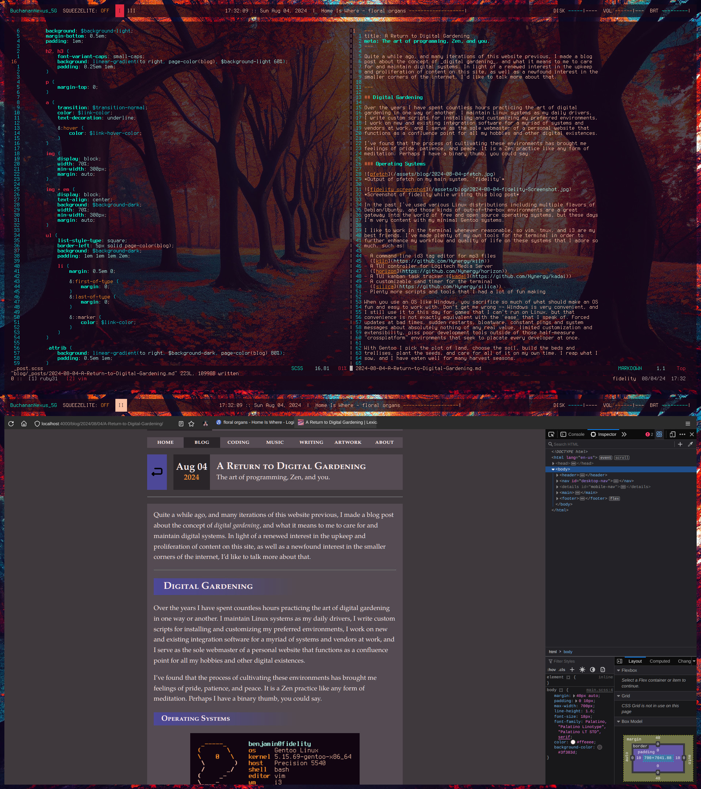

My name is Ben Buchanan, and I made the stuff you're looking at on this site.
Sometimes I write, sometimes I make music, sometimes I create art. Perhaps I
might spend a week straight programming some tool or interface. Or maybe I'll
spend far too much time ignoring this site and playing video games, Netrunner,
and online riichi mahjong.
I also have a day job where I type on a keyboard and sit in a nice chair. Not
every day is a creative one, and that's okay.
I hope you enjoy the stuff I make, or find something interesting on the site.
Thanks for visiting, and be well.
Genius Loci is a term that refers to the "spirit of a place". In modern Western
interpretation, the atmosphere of a location. These nine pieces reflect various
spirits or atmospheres created through the layering and compounding of simple
images. Most are wallpapers, or other color-rich images manipulated until they
emulated a foggy, watercolor-esque texture. A slew of pictures I grabbed from
the Internet, or have used as desktop wallpapers in the past. Each piece has an
ethereal feel, swimming in colors and shapes, drawing the viewer's eyes
throughout with strange pseudo-perspective.
These are places that exist all at once and not at all. Everywhere you are and
aren't, and nowhere you know or have never heard of. These places are silly
little reflections of many lives and no one to live them. I hope you enjoy
them.
Illogical Sketches is a small collection of physical sketches I made while
putting together the manuscript for my third volume of poetry, 'Drift
Illogical'. The sketches are pen/pencil on watercolor paper, and were made with
the aid of a ruler for straight lines and edges.
Rather than trying to experiment with color or digital manipulation in order to
evoke any particular feeling, I let my quarantine-addled imagination conjure up
whatever aimless and illogical things it wanted to. The results were
particularly geometric, sometimes unsettling, sometimes beautiful.
These pieces were eventually included as artwork in the final published version
of 'Drift Illogical'.
Thousand Wishes of Rain was created during the recording of my album of the
same name. It uses many of the same techniques that I used for my other
collection, Genius Loci, but this time favors more noise and use of color as a
mix of acrylic/watercolor textures. The images are inspired by nature, personal
growth, and the falling rain.
Not much else to say, really. There isn't some artistic shtick or narrative
here. Just some ideas inspired by my music and the world around me, put into
shapes and colors.
A pretty ASCII light show for the terminal, written in C++
Colophon
Hosting
This site is hosted on GitHub Pages, though I am not in love with this fact. I
am currently looking into going self-hosted; time will tell if that ever
becomes a reality.
One fun and interesting benefit(?) of hosting my site in a
public GitHub repo
is that previous versions of Lexica Chromatica (of which there are many) can
all be browsed by going back in the commit history and building the site.
Site Construction
Once upon a time this site was built with
Jekyll, but for reasons that I
will probably expound upon in a blog post somewhere, it is now built with
totem, a custom
static site generator written in pure bash, and created by yours truly.
Lexica Chromatica (the current iteration of it, at least) features no
Javascript. Everything you see is handwritten HTML and CSS, barring the minimal
amount of pseudo-templating I employ as part of using totem.
Even the fact that this site functions like a single page application is
implemented with CSS. It is this implementation that relies on the odd URL
structure utilizing hashes ("#") instead of slashes ("/") for the initial page
routes.
I like to use small tools. I like to move slowly. I like to tend my garden.
I don't like overstuffed, unnecessary software. I don't like the rushed
mentality of "move fast and break things". I don't like to subject visitors to
the ugliness of the modern web.
I made this small site with my bare hands. I've taken my time to think through
design changes, site iterations, user experience, and I'm certain there is
still more to do. I do not track you, or run any analytics beyond what GitHub
Pages does, which as far as I know is out of my control (again, I'd like to
move away from this hosting solution in the future). I don't run ads. I don't
slather shiny dopamine buttons all over the place. I've planted seeds here that
I hope passersby will one day admire as flowers.
I did this for you, as much as I did this for me. I hope I am not too selfish
in this.
Home
Lexica Chromatica is a repository of ideas, notes, links,
arrows, paths, dreams, words, sounds, letters, landscapes, and columns of
arbitrary text. It is where I sleep, and where I sometimes stir the waters.
Things I Do Here
I write about and show off creative projects that I work on, or whatever
strikes my fancy. You can read musings on various topics on my
Blog, look through my Coding
projects, listen to my Music, read my
Writing, peruse my Artwork,
or learn more About me.
Looking for slash pages? There are none, except there are.
You'll have to hash it out on your own.
Log
The format and intention of this page is inspired by the logs of
Brian Crabtree.
25.12.26 - Slash Pages
If you're reading this, it means you've discovered the existence of at least
one of my slash pages. Or
maybe it would be more approriate to call them "hash pages"? There are more.
Now that you've seen one, perhaps try finding others.
Ben Buchanan
The music I make under my own name can be a calm electronic ambient soundscape,
an experimental warping of samples, an abrasive drone of noise and discordant
voices, and more. It's whatever I feel like making. Most material is composed
and recorded in VCV Rack, with a focus on generative composition, improvised
performance, and modular synth soundplay.
Official releases can be found on my Bandcamp, but I also post a lot of videos
to my YouTube channel, whether they be live patch performances, Teletype scene
overviews, audio visualizers, and plenty more you won't find on my Bandcamp.
A double-LP that recalls the interactive, improvised recording
process of 'Inner Weather' and uses it to craft a suite of
rain-soaked drone, synth, and piano passages.
An album where I manifest the warmth and joy of spring by
exorcising the rime of winter with six drone-focused cuts.
Dissonant layers of chords and distortion combine into a feverish
slew of melted light through panes of glass.
A four-disc collection of ambient sketches, experimenting with
sample manipulation, distortion, and generative composition. An
allegory of the four seasons, repeating over and over.
A shorter collection of tracks where I begin to play around with
distortion and generative composition. It serves as a brief taste
of what would follow on 'Sketches in Parallax'.
My first foray into the world of modular synth music with VCV Rack.
An ambient electronic representation of my inner state of mind
during its recording.
My first official release, where I use homemade tape loops, an old
Yamaha 4-track, and a DAW to score a series of dreams, visions, and
emotional states. Static weaves a tapestry of dreams into a story.
A side project where I make shorter 5-track collections of sound, typically
with a focus on evoking natural landscapes through generative composition,
minimal voices, and simple atmospheres of soft noise.
After hearing of the passing of Lindsheaven Virtual Plaza during the pandemic,
I was extremely sad that we would never get to hear more of the minimal ambient
work on 'Rainforest Hills'. So I set out to make some of my own work in that
style, as much in tribute to the late artist as it was in practice for my
passion. Eventually it spiraled into more than just a one-off release, and now
I plan to put out plenty more projects under the MoLF name.
You can expect a new MoLF project every six months, in March and September.
I have the sort of creative energy that comes and goes with seasons. I put
things down, pick them back up, abandon them, obsess over them, and forget
ideas I had just this morning.
Here are some things I'm working on now.
Restructuring and tending to my homelab.
Writing a fantasy novel, currently codenamed "Petrichor Sacrament".
Reading up on anarchist literature and praxis.
Sitting on a couple different ideas for albums, including some recorded demos.
Writing

I've self-published a number of collected volumes of poetry through Amazon's
KDP service. You can find links for the physical releases below, as well as
free PDF downloads.

Even If I Am Ash
Published May 10, 2024
My fourth collection of abstract poetry, focusing on
self-exploration and the wonder of the natural world.
The era of music streaming has steadily hurt the industry and swindled artists,
all while masquerading as the "savior" of independent musicians and musical
discoverability. Many people, myself included, feel that the endless fields of
mood-based playlists and algorithm-curated mixes do not satisfy their hunger
for the music they crave.
In this age of mass-produced musical deluge, it can be difficult to know what's
actually worth listening to, and where to go to find it. Let's talk about a few
places to look, and a few strategies to employ when looking for new music.
This is by no means an exhaustive list of resources for finding music. This
is just how I tend to go about it, as someone who prefers albums over
singles, and is always interested in expanding my musical horizons.
Traditional Tastemakers
Music critics have been around since there was music to criticize. While I
don't recommend using critics as your only source of musical intake, I do think
they can serve you well in providing outside opinions and perspectives on the
music industry, the current musical zeitgeist, and much more. Besides, it can
be fun to just listen to someone rant and rave about something they're very
passionate about.
If you spend any amount of time in the music-sphere of the Internet, I'm sure
you've heard the name "Anthony Fantano" mentioned. The Internet's Busiest Music
Nerd certainly lives up to that title as the man behind
The Needle Drop.
I have found countless albums through Anthony's reviews, including a few of my
Album of the Year's, but that doesn't mean I always agree with him.
That's kind of the thing about critics -- you don't need to agree with
them. In fact, I find that using critics I don't entirely share a musical
taste with is beneficial to expanding my own tastes.
Beyond the big names like Fantano, there are plenty of other critics and music
reviewers you can check out. Go find ones that speak to your needs as a music
listener.
For myself, the main sources I go to in terms of music opinions are Fantano,
Oliver of Deep Cuts,
and Kelsie of
The Yellow Button.
Music Publications
One thing the Internet has actually made easier is getting access to
digital publications about music. From big names like
Pitchfork, to the tons of
smaller sites and zines, there is no shortage of places to find music news,
reviews, opinions, interviews, etc.
I used to be an avid Pitchfork reader, though it's been quite some time since
I've found myself on the site. These days I tend to prefer the style and output
of Bandcamp Daily.
Different publications will cater to different fans, so don't be afraid to go
looking around for one or a few that speak to your tastes.
Follow Breadcrumbs
If you find an interview of an artist you like, read it. Perhaps they'll talk
about the inspirations behind some of their music. Perhaps they'll talk about
what they've been listening to recently.
Maybe the artist has a Bandcamp page, and they've selected some other projects
to recommend to people on their page. Maybe people on
RYM won't shut up about how
your favorite band is derivative of their favorite band.
If you find a thread of inspiration woven into music you like, then follow that
thread. You may just find a whole new artist to love, and learn a bit about the
history of their sound in the process.
Perpendicular to this "horizontal" approach to following breadcrumb trails is a
more "vertical" one. Rather than hopping from artist to artist, stick with the
same artist. Like one album in a band's discography? Listen to another one.
Odds are, if you like one, you'll like more.
Other
Word of mouth is a powerful thing. I discovered
my favorite album of all time
because someone I knew mentioned they had recently listened to it and
enjoyed it. Don't be afraid to follow seemingly-random paths into areas of
music you've never visited before. You may just like what you find.
And finally, as much as I bemoan the constant presence of feeds generated by
algorithms, they do sometimes still provide those diamonds in the rough we like
to look for. Most recently my YouTube algorithm managed to serve me the
absolute gem that is the new
Lac Observation record
, which I never would have found otherwise.
If you take a single thing from this blog post, let it be this: You are what
you eat, and that includes what you listen to. Don't let yourself become a
sanitized, corporate-funded, vibes-based mood board slop trough of sound. Find
the sound that liberates you from the dim future of commercial music. You have
nothing to lose but your chains.
Fiddling with a Home Server
Posted on 2024/12/28
Over the past few months, I've been playing around with a home server, steadily
adding more functionality to it as I troubleshoot various issues that crop up.
I'd like to take this blog post to explain why I've been doing this, what
exactly a home server is or could be, and why I think you should give it a try
as well.
Introduction to Self-Hosting
What is a homelab?

Some examples of homelabs from the Internet
Going by the pictures and descriptions you'll find across the Internet, you may
feel like a homelab is a convoluted mess of expensive hardware and endless
software/web interfaces that draws a ton of power and turns your house into a
small-scale enterprise headquarters. In reality, a homelab is just any group of
computing devices that run services accessible to other computing devices on
your home network. This could be local file storage, media servers for
audio/video content, or really anything you want.
Why bother with it?
Most of what you'd run on a homelab is already taken care of by other cloud
services like Google Drive, Spotify, Trello, etc. So in a world where you can
just use a 3rd-party service and not have to run everything yourself, why would
you choose to create a homelab?
Privacy is one concern you may see come up in discussion around
self-hosting and moving away from 3rd-party services. If you upload and store
documents on something like Google Drive, then Google has that data stored on
their servers. You may not know exactly what kind of information they are
harvesting from your data, or what other operations they might perform on it as
part of their business practices. When you self-host, you are the one in
control of all your data, and you dictate exactly what it's used for, and used
by.
Ownership of data kind of goes along with the privacy issues. Do you
still own your data if you willingly upload to a server that's operated by a
corporate entity? What if that entity decides to shut down the service they
were providing, do you still have a right to retrieve your data? Could you even
ask them not to shut down the service in the first place? You are at the mercy
of a capitalist enterprise, and your data could be collateral damage in their
wake.
Speaking of capitalism, many people have ethical concerns with using
services provided by these tech giants like Google, Meta, Amazon, etc. In a
world of ubiquitous generative AI and plenty of potential legal and ethical
ramifications around that kind of exploitative (and ecologically disasterous)
behavior, people should be more wary of who they are supporting, even if only
by necessity.
Personally, my ethical dilemma centers mostly around my love of music, and my
desire to support the artists I enjoy. Streaming platforms like Spotify do not
pay their artists what they deserve, and have disrupted the music landscape in
ways that I find detrimental to the greater music industry, at least from the
perspective of a music listener. Everything is homogenized, and the industry
begins to mirror the increasing monopolization of the greater capitalist
enterprise landscape. In this case, huge artists are like monopolies, trusts to
be busted - attention to be divided up and offered to smaller artists.
This, as well as the propensity of these platforms to invest in and perpetuate
systems of the military-industrial complex, has soured me on them entirely. So
I purchase the music I listen to on sites like Bandcamp, or other platforms
that can adequately pay those artists, and host the digital files on my own
music server, curating my own collection of music.
At the end of the day, running a homelab is also fun at least for people
like me that enjoy cosplaying as a sysadmin after I come home from working my
IT job. You learn a ton about networking, hardware, firewalls,
containerization, and a ton more.
My Setup
What am I running?
My homelab currently consists of a couple small computers, some smart home
products, and a bunch of Docker containers. I use it for hosting my music
server, file storage, task tracking, personal wiki, and more. There's still
plenty to be done, but I'm very happy with how it runs for a starter
homelab.
Hardware
The vast majority of the homelab is running on a Beelink Mini PC with an Intel
N100 chip and an upgraded 2TB SSD. It's small, it's quiet, it's not very power
hungry, and it gets the job done. This machine is called 'Ys', named after the
Joanna Newsom album.
Sitting on top of the Mini PC is an old Raspberry Pi 3b+, which used to run my
old music server. Now the Pi just handles some of the internal networking stuff
that I don't want to bother bogging the Beelink down with. This machine is
called 'Pink', named after the
Boris album.

My Mini PC server and Raspberry Pi homelab setup
Not pictured above are the Sonoff Zigbee controller and Philips Hue lights that
I purchased as a jumping off point for a smart home network. The controller is
just plugged into a USB port on the back of the Beelink.
Software
We'll start with what's running on Pink, since that's simpler. The Pi is just
running two things baremetal: Pi-hole (with Unbound) and PiVPN (with
Wireguard). Pi-hole serves as my local DNS center, ad blocker, and general
networking dashboard outside of my router's browser interface. PiVPN allows me
to VPN into my home network from outside the house, and is what makes it so
that I don't have to directly expose my services and devices to the public
Internet.
Next up is Ys, which currently runs everything in Docker. There's quite a bit
here, so let's take it one at a time.
duckdns is running a job that updates the IP address of my DuckDNS
static IP to reflect whatever my ISP decides my home router's dynamic IP is.
This is what makes the Wireguard VPN work, even when my dynamic IP changes.
Nginx Proxy Manager handles redirecting all my fancy URLs to their
respective service endpoints (in conjunction with Pi-hole local DNS records).
It also handles applying local self-signed SSL certificates to all my
endpoints. This service is called 'Veckatimest', named after the
Grizzly Bear album.
Nextcloud is my current "cloud" file storage system of choice. I use it
as pretty much a direct replacement for Google Drive (though because it is not
exposed to the public I cannot share files with anyone outside of my home
network) and that also includes the Calendar and Tasks functionality. This
service is called 'Souvlaki', named after the
Slowdive album.
OnlyOffice is the document editing suite that I have integrated into my
Nextcloud service as a replacement for things like Google Docs, Sheets, etc.
You can view and edit documents right inside of Nextcloud, which is very
convenient. This service is called 'Vespertine', named after the
Björk album.
Home Assistant is the smart home controller/dashboard that I am using
with my Zigbee network. It's the latest thing I've added to the homelab, so
there isn't much going on here yet besides a couple Hue lights that I can mess
with. This service is called 'Superkilen', named after the
Svaneborg Kardyb album.
Lyrion Music Server (fka Logitech Media Server) is what I use to run my
music streaming server. Setup is simple, adding and removing music is easy, the
interface (using the Material Skin plugin) is nice to look at and intuitive to
navigate. It doesn't try to be flashy, it doesn't try to emulate Spotify, and
because it comes from the lineage of the Logitech Squeezebox ecosystem, it's
easy to connect to and play around with via a JSON RPC API. It's my favorite
thing that I run, and I love it to death. This service is not named after an
album, and is simply called 'Muse'.
Firefly III is what I use to track my finances. I used to use an
over-engineered spreadsheet, but this service is much more tailored for how I
like to keep track of my expenses and income, as well as bills and other major
purchases. This service is called 'Buckminster', named after the
Driftless Pony Club album.
Planka is a kanban-style task tracker that I have mostly moved away from
in favor of the Tasks app on Nextcloud, though I do still sometimes use Planka
for tracking my music and programming projects. This service is called
'Tapestry', named after the
Carole King album.
Wiki.js is the platform I use for my personal wiki. At the moment I use
it mostly to track various sysadmin information for my homelab, but I plan to
use it more as a general information center as time goes on. This service is
called 'Relayer', named after the
Yes album.
My Experience Thus Far
Creation & Considerations
When setting up my machines, I knew I wanted something simple to deal with and
easy to troubleshoot. For my daily drivers and work laptops I use Gentoo, but
that certainly is not something I want to deal with for a server with high
uptime. So I opted for the latest stable release of Debian on the Mini PC, and
a typical 64-bit version of Raspian on the Pi.
In order to make sure network configurations worked properly, each machine is
given a static IP address, either through `dhcpcd` or through DHCP reservations
on my router. Once everything was set up and I confirmed I could SSH into each
machine, I SSH hardened them by disabling password logins, enabling
public/private key sign in, and changing the port that the SSH server is
listening for connections on.
I also had to go into my router's browser interface in order to set a custom
entry for local DNS, so that it would route DNS queries to my Pi instead of
whatever the router's defaults were.
I considered making my services public on an actual Internet domain and just
gating them all behind login portals or other authentication methods, but in
the end I felt it was easier (and far more secure) to just leave everything
local-only, so a user would need to VPN into my home network in order to access
any services or machines. This decision would end up making some things much
easier, and other things much more difficult.
Lessons Learned
One thing that was made easier by keeping things local was the DNS entries for
my named services. By using Pi-hole and Nginx Proxy Manager it was dead simple
to set up pretty domain names using CNAME entries and the reverse proxy.
One thing that was made far harder was SSL certificates. If I had exposed my
services to the Internet I could have used the built in Lets Encrypt
functionality of Nginx to create my certs, but because I was local only, I
ended up having to self-sign my certs, including creating a local certificate
authority. That authority has to then be uploaded into any device that wants to
authenticate the validity of those SSL certs. Bit of a pain to set up, but once
I got everything working it seems to be very smooth sailing.
Besides the SSL certs there were some other tempermental integrations, such as
getting OnlyOffice working inside of Nextcloud (which prompted me to completely
restructure the internal Docker network that connected all my containers),
getting the VPN to work with my dynamic IP through duckdns, and trying to
figure out which services required websocket support through the reverse proxy,
among others.
Future Plans
There's still a lot that I need to do with this homelab, such as regular
backups, setting up a NAS, creating an admin dashboard or homepage of some
kind, system monitoring with Prometheus/Grafana, messing with firewall rules,
and perhaps even playing around with adding a Windows machine to the network
with Parsec for some sort of cloud gaming setup.
I'm already planning on adding a second Mini PC to the network in order to act
as a squeezebox player in my audio setup, as well as split some of the load
with the current Mini PC. Some services that don't really need a fast ethernet
connection could be moved over to the new machine that uses Wi-Fi, which should
help with any computational load issues that might arise.
There's also a lot more fine-tuning I want to do with the existing
infrastructure, such as adding to and improving my Home Assistant stuff,
organizing my Nextcloud stuff, putting all my Docker files and other
configurations into a private GitHub repo, etc.
Conclusion
It's been very fun, educating, and rewarding to self-host more and more of my
stuff. It's made me feel a better sense of ownership over those things, which
has made me cherish them more.
I would absolutely recommend you start your own homelab if this is something
that interests you. Even if it's just a single Raspberry Pi or an old laptop or
salvaged e-waste parts, you can do quite a lot with just a little bit of
relatively inexpensive hardware.
Hopefully you enjoyed reading my ramblings about homelabs and self-hosting. Now
if you'll excuse me, I've got some Docker containers to play around with.
Happy homelabbing!
A Return to Digital Gardening
Posted on 2024/08/04
Quite a while ago, and many iterations of this website previous, I made a blog
post about the concept of digital gardening, and what it means to me
to care for and maintain digital systems. In light of a renewed interest in the
upkeep and proliferation of content on this site, as well as a newfound
interest in the smaller corners of the internet, I'd like to talk more about
that.
Digital Gardening
Over the years I have spent countless hours practicing the art of digital
gardening in one way or another. I maintain Linux systems as my daily drivers,
I write custom scripts for installing and customizing my preferred
environments, I work on new and existing integration software for a myriad of
systems and vendors at work, and I serve as the sole webmaster of a personal
website that functions as a confluence point for all my hobbies and other
digital existences.
I've found that the process of cultivating these environments has brought me
feelings of pride, patience, and peace. It is a Zen practice like any form of
meditation. Perhaps I have a binary thumb, you could say.
Operating Systems

Output of pfetch on my main system, 'fidelity'

Screenshot of fidelity while writing this blog post
In the past I've used various Linux distributions including multiple flavors of
Debian/Ubuntu, and those kinds of out-of-the-box environments are a great
gateway into the world of free and open source operating systems, but these
days I'm very content with my minimal Gentoo systems.
I like to work in the terminal whenever reasonable, so vim, tmux, and i3 are my
best friends. I've made plenty of my own tools for the terminal in order to
further enhance my workflow and quality of life on these systems that I adore
so much, such as:
A command line id3 tag editor for mp3 files
(kiln)
A TUI controller for Logitech Media Server
(horizon)
A customizable sand timer for the terminal
(silica)
Plenty more scripts and tools that I had a lot of fun making
When you use an OS like Windows, you sacrifice so much of what should make an
OS fun and easy to work with. Don't get me wrong -- Windows is very convenient,
and I still use it to this day for games that I can't run on Linux, but that
convenience is not exactly equivalent with the 'ease' that I speak of. Forced
updates at bad times, sudden restarts, bloatware, constant pings and system
messages about absolutely nothing of any real value, limited customization and
extensibility, piss poor development tools outside of those half-measure
"crossplatform" environments that seek to placate every developer at once.
With Gentoo I pick the plot of land, choose the soil, build the beds and
trellises, plant the seeds, and care for all of it on my own time. I reap what
I sow, and I have eaten well for many harvest seasons.
Scripts
With a system as minimal and extensible as Gentoo, I've gone out of my way to
add and customize many things to suit my needs, much of it set up or controlled
by a suite of
bash scripts.
These bash scripts and other configuration files need to be wrangled and
managed in some sane manner, so I copied some ideas from
this repo when
deciding on what kind of infrastructure should handle this task. Everything is
organized according to this structure, checked against
shellcheck, and tailored
toward my personal system in a way that allows for easy post-installation
configuration when I spin up a new Gentoo box.
For work, things are a bit different. I still use Gentoo on my work machine,
but the scripts that I'm working with aren't always mine. Even the ones that
are fully mine have to contend with outside influences on style, purpose,
language, conventions, etc.
I work in IT in higher education, so much of what I do is either integrating
vendor software into our existing systems, or creating an in-house tool for one
of our functional offices. A lot of it is database work, and I'm no SQL wizard,
so queries can get a little messier than I would normally be comfortable with
in my personal scripts. This is okay; a little bit of messy code here and there
is a fact of life, and worrying about it will only keep you from improving as a
programmer. That doesn't mean you can write shitty code all willy-nilly, just
that you shouldn't be so puritanical about eradicating anything that doesn't
meet your impossibly high standards.
I try my best to adhere to the same best practices that I do in my personal
scripts, but when things require a different approach at work, I let those
requirements guide me instead of my preferences. I still find my work fun and
rewarding, so I must be doing something right.
Digital Spaces
When it comes to curating my own digital spaces beyond the foundation of an OS,
I've had a history of moving away from social media, and trending toward more
personal and intimate forms of self-expression and representation. I abandoned
Facebook very quickly after creating my account, and over the years I've done
less and less posting on platforms like Instagram and Twitter. Today I really
only use them to see what friends are up to, or to follow announcements from
various bands that I like. The personal website feels like a much more
effective means of expressing who I am over time.
So when I maintain this site, I take it very seriously. I want it to be as good
a reflection of my self as possible. I want it to look good, feel good to
navigate, contain good content, and leave any visitors with a good impression
of me. As a programmer, that also applies to my source code. If anyone wants to
trawl through the
GitHub repo for this site
to see how it works, I want them to walk away feeling like I have done things
efficiently, elegantly, and practically. I want them to know how serious I am
about what I preach here.
So I like to leverage the power of Jekyll's static site generation with Liquid
and YAML, as well as make my front-end life easier with a CSS preprocessor like
SASS. I want to make maintaining this site easier for me, because the easier it
is, the more likely I'll be to add to it in the future.
And as I've gone through this latest iteration of site overhauls and
philosophical questions about why I'm doing this, I've stumbled across many
other people who seem to have similar ideas about the current state of social
media and the web. So let's talk about the Personal Web.
The Personal Web
I've always had a fascination with digital spaces that you can call your own.
Before I made this site I had a stint on the
gophernet via the
SDF Pubnix System.
That was my first foray into a more personal expression of my online
presence. For other people, they may have used more visually-expressive mediums
like WYSIWYG site builders, or gone totally independent with self-hosted
servers. But I think a lot of us did what we did out of a shared sentiment: The
web is ugly, slow, and hostile to people like us.
Post-Web 1.0 Disillusionment
With the rise of Web 2.0
around the mid-2000's, the strange and fantastical internet of the late 90's
was quickly being replaced with corporate no-man's-lands. Ads multiplied across
pages, there was mass proliferation of external applications and complex
Javascript, and things began to move to a slower and more inconvenient
cloud-based architecture as companies figured out they could make bank in the
process.
The era of the Web 1.0 static site was coming to an end. As I got older, I
slowly became more and more disillusioned with how slow, bloated, and
monotonous the internet had become. It's become a chore to surf the web, which
is a damn shame.
Now Web 3.0 is peeking its head over the burning horizon of the future, and the
phrase "web technologies" leaves a bad taste in my mouth. I want to see a more
personal internet resurface, one that brings people closer together, not
isolates them further.
Neocities and Webrings
And so I stumbled upon this recent resurgence of Web 1.0 style personal sites,
driven mostly by neocities. I
was enthralled when I found this new vast community of people that wanted
exactly what I had been yearning for.
In searching through endless sites plastered with buttons and sparkles and blog
posts and artwork and unending creativity, I discovered the revival of a
classic Web 1.0 social tool: the
Webring.
Suddenly, the idea of finding a shared community online doesn't seem so far
away. Everyone has pasted towering lists of rings on their pages, linking this
way and that across an ocean of interests, hobbies, philosophies, and other
niches.
You can find a nifty graph of tools and other resources for the personal web
here.
The Path Forward
In discovering this wave of "Neo-Web 1.0" interest, it's spawned the very same
interest in me. I've already got this site, so I might as well join in on the
fun, right?
As of me writing this blog post, I am not currently part of any webrings or
online communities of the personal web. But I'm certainly not opposed to the
idea of joining one, or even starting my own. It seems that the vast majority
of existing webrings are pretty sparse, only boasting 5-10 members, which
certainly isn't a bad thing. I suppose I just haven't found a ring that really
speaks to me and my perceived community.
Perhaps when you're reading this, you'll notice some webring links on the page,
and you'll know that I've found my place in this new-old internet that we so
desperately need today. Until then, I'll keep hoping and working toward making
that kind of space for myself.
I'll keep practicing my Zen and tending to my garden.
Saying Less
Posted on 2024/07/29
When I was very young, I didn't know how to shut up.
People would constantly have to tell me to stop talking, and eventually I
learned my lesson. I started talking less, and decided to expend that boundless
energy on creative pursuits. I would hole myself up in my room and invent
games, write stories and poetry, draw pictures, explore an endless tide of
interests.
Most of those interests have faded into the background, or disappeared
entirely. But I do find myself in my mid-twenties still clutching to those
primal creative desires to make music, write poetry and prose, and create
something interesting and worthwhile. However, recently those desires have not
seemed so primal, so urgent.
It used to be that I couldn't help myself from spewing all manner of words into
thousands of poems, or composing every melody that got stuck in my head into a
song. I would release hours of music a year, or self-publish a collection of
poetry at the same steady pace; now it's been months since I've shown any signs
of life on my
Youtube channel,
or written a poem any longer than a
Tanka. Past
attempts at writing blog posts with any consistent schedule have all inevitably
failed.
I alluded to this feeling of silence, or stagnation, in the foreword to my last
poetry collection,
"Even If I Am Ash",
as it was released nearly three whole years after the previous collection. I
don't like the feeling of being in this perpetual dry creative season. I find
it difficult to scrounge up the motivation to write more than a few lines of
poetry at a time, as I feel I simply have less to say without repeating myself.
I find it difficult to sit at my desk and make music without struggling to land
on a worthwhile idea or sound.
This second case is especially frustrating for me right now, as I'm coming up
on a self-imposed deadline to release the next
Maps of Low Fidelity
album by the end of September. As of the time of writing this blog post, I only
have an early version of a single track recorded, and it's the first recorded
music I've made in months.
I think part of this problem is the strange sense of dread it creates in me,
that I'm slowly drying up creatively, and will soon cease to create anything
else worth seeing the light of day.
But I also think this line of reasoning is a bit dramatic, and could use some
perspective from the world of reality. I've got more going on in my life now
than I ever have in the past, I've got a better grasp of what is worth sharing
and what is worth leaving on the cutting room floor, and I've been enjoying the
peace of mind that comes with simple -- and wordless -- appreciation of the
world around me.
These things forge a creative silence in my life, but what fills that silence
is not death, or anything so dramatic. It's life, all that other stuff that
goes on outside of my music and poetry. I have a job to do, bills to pay,
relationships to tend to, and life skills to acquire and hone.
So here are some ideas I'd like to implement going forward that will hopefully
help my mindset when it comes to my creative ventures:
Quality > Quantity.
Deadlines force creative approaches to solving blockages. Use them to
your advantage, not to your mental detriment.
Comparison will only destroy motivation. If what you create is true to
yourself and resonates with your current situation, then it is good. It
is enough.
If the process is no longer enjoyable, then change the process. If no
process is enjoyable, then perhaps you should think about whether you
actually like what you are doing, and whether it is worth your
time/effort.
Not everything should be intended for other eyes/ears. Some things are
just for you, and that's okay. If you go into every fresh idea with the
thought that other people will be making judgements against it, then
you will never be free enough to create what you want to create.
These are things I want to keep in mind for the future, so that hopefully I can
create more things that people will resonate with and enjoy. I want to get back
into the habit of having fun making music and poetry. I want to write more blog
posts about random interests when the thought arises. I want to feel that same
primal creative desire I did when I was 10, and 20, and I want to feel it still
when I am 30 and beyond.
Perhaps you can apply some of these thoughts to make something you find
compelling as well. Thanks for reading.
{kind=link}
{kind=link}
{kind=link}
{kind=link}
{kind=link}
{kind=link}
{kind=link}
{kind=link}
{kind=link}
{kind=link}
{kind=link}
{kind=link}
{kind=link}
{kind=link}
{kind=link}
{kind=link}
{kind=link}
{kind=link}
{kind=link}
{kind=link}
{kind=link}
{kind=link}